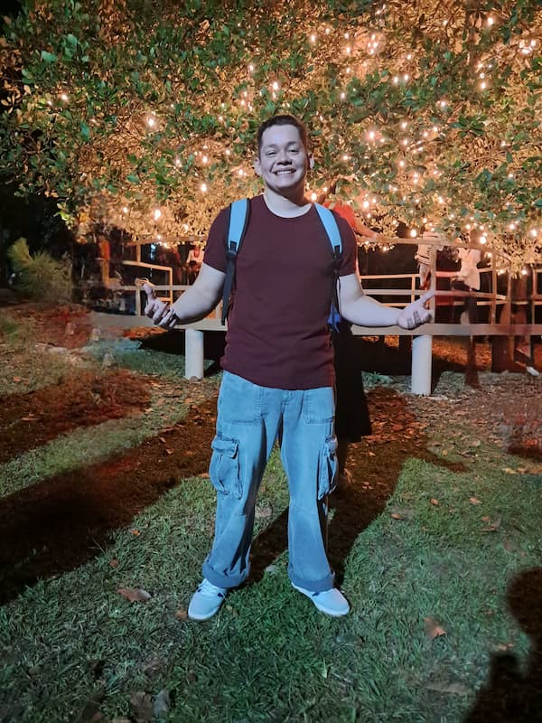

Enan Figueroa Andrade| WDD 130

Hello! My name is Enan Zuriel Figueroa and I am from Tegucigalpa, Honduras. I am 26 years old and I enjoy reading books and going to the gym. I recently started my carreer path in software development at BYU Pathway and I am excited to learn new things and how to create websites!